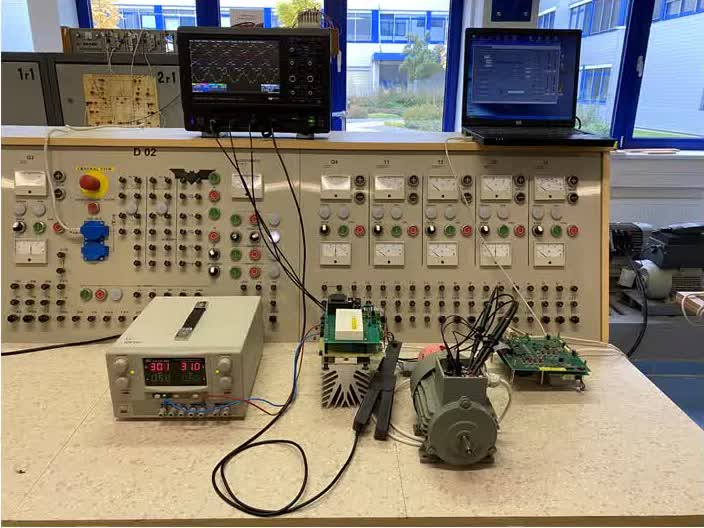

Ke každé vypínatelné součástce je antiparalelně připojena dioda. Spínáním spínačů je vytvářen průběh výstupního napětí. Průběh proudu je dán charakterem zátěže. Při zatížení do odporu a indukčnosti mohou po vypnutí spínačů převzít vedení proudu nulové diody. V náhradním zapojení motoru představuje zdroj vnitřní indukované napětí. Podle směru přenosu energie pracuje střídač v motorickém nebo generátorickém chodu.
Václav Kůs, Elektrické pohony a výkonová elektronika, kap. 6.2–6.3.1, s. 65–68.
Zvolte obdélníkové řízení a připojte sondy vůči středu O. Spusťte přehrávání a posuňte Zpomalení doprava. Šest stavů můstku pak můžete sledovat pomaleji. Časovým kurzorem vyberte přesný okamžik. Modře je vyznačen povel na hradle IGBT. Zelená cesta se šipkou ukazuje okamžitý proud. Oranžová větev ukazuje zpětnou diodu ve vedení. V každé větvi je povel pro dolní spínač opačný k povelu pro horní. Proud je kladný od vývodu do zátěže. Je-li vývod připojen k horní sběrnici, kladný proud vede horní tranzistor a záporný horní dioda. Na dolní sběrnici vede při kladném proudu dolní dioda a při záporném dolní tranzistor. Při nulovém proudu zůstane větev šedá.
Ponechte kurzor na místě a přepojte sondy vůči uzlu N. Uzel souměrné hvězdy není spojen se středem meziobvodu O. Když jsou dva vývody na kladné sběrnici a jeden na záporné, napětí na jejich zátěžích jsou . Když všechny tři větve PWM sepnou na stejnou sběrnici, napětí všech tří zátěží je nulové.
Při zastaveném kurzoru přepínejte mezi pohledy Stav tranzistorů a Proudová cesta. V prvním pohledu modrá zvýrazní tranzistory s povelem zapnout. Ve druhém sledujte, která součástka skutečně vede proud. Ve výchozím pokusu s RL zastavte kurzor na . První fází teče . Povel má horní tranzistor , ale proud se vrací jeho diodou do kladné sběrnice. Posuňte kurzor na . Povel je stejný, proud už je kladný a vede tranzistor. V grafu vyhledejte změnu povelu a posuňte kurzor těsně za spínací hranu. Proud v indukčnosti pokračuje původním směrem, takže jej může převzít zpětná dioda. Sledujte ji až do průchodu proudu nulou. Pak zaškrtněte R a porovnejte stejný okamžik. Při nulovém napětí na všech třech fázích může induktivní proud obíhat mezi větvemi po jedné sběrnici.
Zaškrtněte proudy všech tří fází. Mají společnou svislou stupnici a stejný časový kurzor. Pro porovnání napětí na témže vývodu zaškrtněte Napětí sond i Druhou referenci napětí. Dolní a horní spínací povel můžete zobrazit společně. V tomto ideálním modelu se povely překlápějí současně. Mrtvý čas, při němž jsou oba tranzistory krátce vypnuté, model neuvažuje.
V režimu Střída jedné větve zvolte Dva pulzy a měřte vůči O. Pohybujte střídou. Tam, kde je modrá reference nad šedou trojúhelníkovou nosnou, dostává horní spínač první větve povel. Delší kladný pulz zvýší střední napětí větve podle . je podíl doby sepnutí horního spínače na periodě nosné. V tomto samostatném pokusu jsou ostatní dvě větve připojené k záporné sběrnici.
Přepněte na sinusovou PWM a zobrazte celou periodu. Tři sinusové reference mají stejnou amplitudu a jsou vzájemně posunuté o . Změnou hloubky modulace měníte amplitudu reference vůči amplitudě nosné. Sledujte šířku pulzů a amplitudu proudu. Zvyšte pouze spínací frekvenci. Během téže periody přibudou pulzy a u induktivní zátěže se zmenší zvlnění proudu. Změňte pouze výstupní frekvenci a odečtěte novou periodu z časové osy. Pro srovnání se vraťte k obdélníkovému řízení.
je napětí mezi sběrnicemi. Pro fázi značí sepnutí horního spínače a sepnutí dolního. Z napětí vývodů vůči středu O dostaneme posunutí uzlu N a napětí zátěží.
Zvolte sinusovou PWM a sondy vůči N. U odporové zátěže sleduje proud každý napěťový skok podle . Přepněte na odpor a indukčnost. Napěťové pulzy se zachovají, proud je však spojitý. Zvětšete indukčnost a porovnejte zvlnění ve stejném časovém detailu.
Vyberte vinutí s vnitřním indukovaným napětím. Nastavte amplitudu nejprve na nulu a potom ji zvyšujte. Čárkovaná křivka v první napěťové stopě ukazuje indukované napětí první fáze. Napětí pro změnu proudu získáte odečtením indukovaného napětí a úbytku na odporu od napětí zátěže.
Proud je kladný od vývodu k uzlu N. Napětí zdroje má kladnou svorku směrem k vinutí. Parametry platí pro jednu fázi, je špičková hodnota indukovaného napětí a kladné znamená, že indukované napětí dosáhne maxima později než sinusová reference téže fáze. Při výstupní frekvenci odpovídá fázovému posuvu časový posun přibližně . U samostatného pokusu s jednou větví se sinusový zdroj řídí frekvencí časové základny. Rychlost a buzení stroje zastupuje předepsané indukované napětí. Model předpokládá ideální spínače bez ochranných prodlev.
Zastavte kurzor na hraně napěťového pulzu a zvolte Dva pulzy. Zobrazí se dvě periody nosné. Tlačítky plus a minus nastavíte vlastní časové měřítko. Automěřítko zvětší i malý proud. Pro přímé srovnání různých zátěží při stejném odporu zvolte pevnou proudovou stupnici. Přesnou spínací frekvenci lze zadat po . Přehrávání opakuje vybraný záznam jedné výstupní periody. Při neceločíselném poměru frekvencí by v další periodě ležely spínací hrany jinde. Výpočet počátečního proudu zohledňuje předchozí průběh nosné.

Václav Kůs, Elektrické pohony a výkonová elektronika, kap. 6.2.2 a 6.3–6.3.1, str. 65–68, obr. 6-3 až 6-7 (můstek, zpětné diody a zátěž motoru). Řízení výstupního napětí a PWM popisuje kap. 6.4, str. 69–72. Číslování součástek v pokusu odpovídá laboratornímu videu.
Tomáš Komrska, Luboš Streit a Bedřich Bednář. 3-fázový napěťový střídač. Západočeská univerzita v Plzni, Fakulta elektrotechnická, Katedra výkonové elektroniky a strojů. Hodnoty součástek zde slouží pro výpočtový pokus.